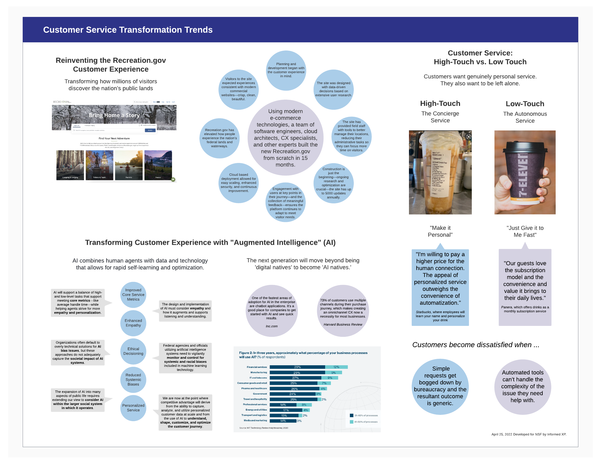
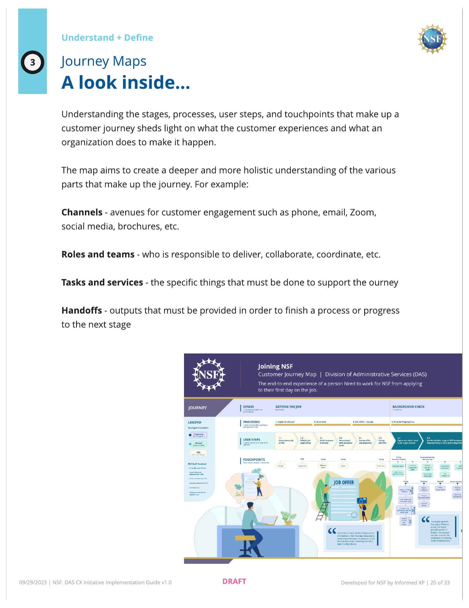

NSF Customer Experience Research
National Science Foundation — Enterprise CX Assessment

The Situation
In December 2021, Executive Order 14058 (opens in new tab) directed federal agencies to transform customer experience and rebuild public trust. The EO framed every interaction between the government and the public as an opportunity to reduce "time taxes" — the cumulative burden of navigating fragmented, compliance-oriented processes.
NSF's Division of Administrative Services (DAS) — responsible for facilities, security, IT, records, and building operations — needed to understand how its 200+ internal services were experienced by NSF staff before it could improve them. No one had a complete picture:
- Services were requested through a patchwork of email aliases, SharePoint forms, walk-up desks, and personal relationships
- There were no consistent feedback mechanisms or unified service catalog
- 50% of the workforce was eligible for retirement within three years
The Diagnosis
The core finding emerged early and persisted throughout: DAS teams genuinely cared about service quality but had no way to know whether their effort was landing. Staff saw themselves as mission-critical partners, but the rest of NSF often experienced them as compliance obstacles. That gap between organizational self-image and lived experience was the real problem — and no amount of service cataloging would have surfaced it without the interview work underneath.
This wasn't a technology problem or a process problem. It was a measurement problem layered on top of a perception problem. DAS needed to see itself the way its customers saw it, and it needed a framework to act on what it found.
The Intervention
Over four task orders across two years, our team built the research infrastructure and measurement framework to close that gap. The work progressed through a 6-step CX framework:
- User Typology — categorizing the different types of internal customers DAS serves
- Service Model — mapping 200+ services across branches, systems, and request channels
- Journey Maps — 14 end-to-end journey maps built from research, tracing experiences like onboarding a new hire across multiple DAS branches
- CX Criteria — 5 dimensions for evaluating service quality
- CX Scorecard — quarterly measurement tracking metrics, customer sentiment, and dependencies across branches
- Implementation Roadmaps — prioritized recommendations for leadership
I helped build the research repository that became the project's analytical backbone — a structured inventory of services mapped, internal systems cataloged, existing materials reviewed, and external sources benchmarked against DAS operations. I also led external research and trends reports synthesizing federal case studies into strategic briefs for NSF leadership. These served a dual purpose: they gave DAS leadership concrete models to reference — how other agencies were reframing "administrative services" as "mission support," how the CIA had experimented with internal marketplace competition, how the service-profit chain connected employee satisfaction to customer outcomes — and they grounded our recommendations in established precedent rather than abstract theory.


What I Learned
This project taught me how organizational research differs from product research. In product work, you're trying to understand how someone uses a tool. In organizational CX, you're trying to understand how a system sees itself — and how to close the gap between that self-image and how it's actually experienced.
It also taught me that robust research doesn't automatically lead to implementation. We were there to make recommendations, not to implement them — and the people who would need to change their processes faced a real asymmetry:
- They were already busy fighting daily fires
- Without metrics already in place, there was no way to prove an improvement and get recognition for the effort
- But if something went wrong, they'd be the ones held accountable
- Process changes often required equipment upgrades and budget that was hard to secure
- Coordinating with busy executives across branches added friction at every step
Small upside, large downside, and no safety net. Change management has to account for the psychology of the people being asked to change — not just the processes being redesigned. The research was sound, and the framework gave leadership a basis for prioritization. But bridging the gap between a recommendation and an intervention requires being embedded alongside the people doing the work, not delivering reports from the outside.